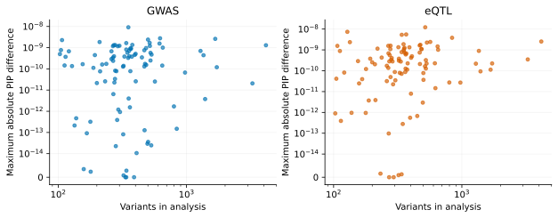

On this page
Numerical accuracy
Current development version: 0.2.4.dev2
New comparisons against susieR 0.16.6 at commit 8e56a8e038e989856d106d9ca5175cc664fea9d2
use compute commit ff379ada284a63a3cf1770d43faacc6b929dc923. All 200 frozen real
trait analyses pass maximum absolute PIP error ≤10⁻⁵ with zero relative tolerance,
plus input, model and probability validity checks. Iteration counts, convergence
flags and credible-set component/member identities agree in all 200 cases.
CS order is immaterial; sets are matched by their original component IDs.
| Quantity | GWAS maximum absolute difference | eQTL maximum absolute difference |
|---|---|---|
| PIP | 9.139611×10⁻⁹ | 1.220497×10⁻⁸ |
| alpha | 9.140027×10⁻⁹ | 1.220497×10⁻⁸ |
| mu | 5.260663×10⁻¹⁰ | 2.340635×10⁻⁸ |
| mu2 | 1.394811×10⁻¹⁰ | 3.704008×10⁻⁹ |
| V | 4.078631×10⁻⁶ | 1.486289×10⁻⁷ |
| sigma2 | 0 | 0 |
| ELBO | 1.000124×10⁻⁵ | 3.917756×10⁻⁸ |
| KL | 7.010086×10⁻⁸ | 1.171606×10⁻⁷ |
| lbf | 2.821602×10⁻⁵ | 2.743060×10⁻⁷ |
| lbf_variable | 2.821542×10⁻⁵ | 3.389438×10⁻⁷ |
Intermediate fields are retained as diagnostics using absolute and relative tolerances of 10⁻⁶. Region25/GWAS exceeds that diagnostic rule for V and lbf_variable; its PIP passes the stated PIP criterion. Maximum credible-set coverage differences are 2.14×10⁻⁹ (GWAS) and 2.59×10⁻⁹ (eQTL); maximum purity difference is 8.88×10⁻¹⁶ in both groups. These results describe standard fits with the fixed real-panel settings.
A separate parameter panel executes the same pinned R reference for 58 outcomes: 54 returned fits and four expected prior-guard errors. It covers RSS and sufficient statistics, fixed and estimated residual variance, optim/EM/simple/fixed prior variance, nonuniform priors, standardization and stopping regressions. All 54 returned fits pass PIP and validity checks; the four error cases match the expected prior-guard rejection in both implementations. A restricted independent NumPy reference also passes 31 supported comparisons; it rejects unsupported boundary inputs explicitly. The preserved cycling example converges in 49 sweeps in both implementations, with zero maximum PIP difference. Refinement is tested separately and retains the documented search differences.
Historical comparison: 0.2.3rc4
The historical real-data comparison uses prusie 0.2.3rc4 and susieR 0.16.6 at commit
8e56a8e038e989856d106d9ca5175cc664fea9d2. It reanalyzes saved full fits from
6 October 2026 using the matched inputs and parameters described in
performance methods. These records identify the measured rc4 source and binary; they are not timings or full-panel measurements of later checkouts.
The panel covers ordinary RSS fits with fixed residual variance and optimized prior variance, as specified in those methods. It does not test refinement, alternate convergence criteria or the current development snapshot's stopping and estimated-residual-variance checks.
Variant inclusion probabilities
| Analysis | Analyses | Variants per analysis | Maximum absolute PIP difference | Trace: case / variant index (zero-based) |
|---|---|---|---|---|
| GWAS | 100 | 103–4162 | 9.14e-09 | region16/gwas / 49 |
| eQTL | 100 | 103–4162 | 1.22e-08 | region31/eqtl / 238 |
Across the evaluated GWAS analyses, the maximum absolute difference in variant PIPs relative to susieR 0.16.6 was 9.1396109e-09. Across the evaluated eQTL analyses, the maximum absolute difference in variant PIPs relative to susieR 0.16.6 was 1.2204966e-08.
The numerical criterion is absolute PIP difference ≤10⁻⁵ with zero relative tolerance, together with input/model/probability validity. The table reports observed elementwise maxima, rather than that threshold. Each maximum is traceable to a zero-based variant index, both fitted values and hashes of the two raw fit records in the machine summary.


The vertical axis is symmetric-log with a linear interval below 10⁻¹⁴; exact zeros are retained at zero. Vector PDF.
region25/gwas: prusie 100 iterations, susieR 100 iterations, both unconverged. Both calls completed and their outputs enter the numerical maxima and timing summaries.
Posterior arrays, Bayes factors and objective
| Quantity | Scale / units | GWAS maximum absolute difference | eQTL maximum absolute difference |
|---|---|---|---|
| alpha | Probability | 9.14e-09 | 1.22e-08 |
| mu | Standardized effect | 5.26e-10 | 2.34e-08 |
| mu2 | Squared standardized effect | 1.39e-10 | 3.7e-09 |
| lbf_variable | Natural-log BF | 2.82e-05 | 3.39e-07 |
| lbf | Natural-log BF | 2.82e-05 | 2.74e-07 |
| V | Squared effect | 4.08e-06 | 1.49e-07 |
| sigma2 | Phenotype variance | 0 | 0 |
| elbo | Natural-log objective | 1e-05 | 3.92e-08 |
| KL | Natural-log divergence | 7.01e-08 | 1.17e-07 |
Maxima are computed elementwise across every valid analysis, including iteration-limit outputs. The machine summary includes the case, array index, both values at the maximum and reference magnitude for each field. ELBO traces are compared only with matching shapes; per-case records retain any shape mismatch.
PIP and alpha differences have probability units. Conditional effects are on the fitted standardized predictor/phenotype scale for these z-input analyses; mu2 is a second moment, not a variance. Component and variant log Bayes factors use natural logarithms. Their numerical differences are recorded separately from PIP. ELBO is the iteration objective before final low-variance trimming; V, moments, Bayes factors and KL follow the finalization semantics described in results.
Credible sets
| Analysis | prusie sets | susieR sets | Component/member differences | Maximum mass difference | Maximum purity difference |
|---|---|---|---|---|---|
| GWAS | 154 | 154 | 0 | 2.14e-09 | 8.88e-16 |
| eQTL | 97 | 97 | 0 | 2.59e-09 | 8.88e-16 |
Sets are matched by original component ID and compared as member sets; returned ordering does not affect the comparison. All actual masses, purity statistics and zero-based members are retained.
The requested mass is 0.95. Returned mass is the sum of the selected alpha entries in the original component; purity uses every selected pair's absolute correlation. The retained numerical records include independent checks of PIP identity, alpha normalization, actual set mass and purity, including empty sets. Convergence and the presence of a credible set are different properties.
Independent toy example
The independent 500-variant toy example fit converged in 3 iterations and returned 2 credible sets. Its maximum absolute PIP difference from the separately generated susieR 0.16.6 reference was 1.66e-10.

The dashed lines mark the two simulated nonzero effects. This single toy example has its own newly executed reference, generation script and packaged inputs. See the toy example tutorial and vector PDF.
Reproduce the comparisons
Retained records include the real panel
and a separately identified older synthetic regression panel. The older fixture
and references remain byte-for-byte regression inputs. The installed package's
independent toy example is checked against its separate packaged R reference
by tests/test_packaged_example.py.
The reproducibility guide distinguishes regeneration from
saved records, offline frozen-reference checks, and live-R fitting.
tools/benchmark/compare_fits.py compares original component IDs and retains all
field diagnostics. Existing frozen references and tolerances are unchanged.